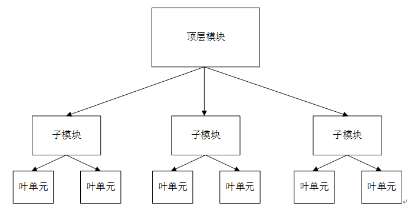
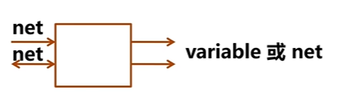

verilog基础语法
Table of Contents
前言
这是一种计算机硬件语言，是可以模拟计算机的一种仿真语言，语法上与 C 语言相似。本文主要是笔者为了学习《计算机组成原理》而去了解的一种语言
介绍
Verilog 是一种硬件描述语言，用于数字电路的系统设计。可对算法级、门级、开关级等多种抽象设计层次进行建模
继承了C语言的多种操作符和结构，与另一种硬件描述语言 VHDL 相比，语法不是很严格，代码更加简洁，更容易上手
Verilog 不仅定义了语法，还对语法结构都定义了清晰的仿真语义。因此， Verilog 编写的数字模型就能够使用 Verilog 仿真器进行验证
Verilog 环境搭配
在终端使用指令来安装
|
|
配置 vscode
安装插件
waveTrace插件verilog-HDL插件Verilog Format插件
配置
- 在
linux上安装ctags - 找到
ctags的安装路径，将其添加到vscode的设置Verilog>ctags:Path中 - 将
vscode中设置的Verilog>linting:Liner设置为iverilog - 在
vscode的设置verilog>linting>iverilog:Arguments中填入-i，然后就配置完成了
编译运行
对于 verilog 语言，文件的后缀是 .v ，并且需要专有的编译器来进行编译
|
|
编译结束之后，会生成 a.out 文件，可以使用指令来指定输出的文件名称的。然后在终端输入
|
|
来运行
设计方法
Verilog 采取从上到下的设计方法。需要先定义顶层模块功能，进而分析要构成顶层模块的必要子模块，然后进一步对各个模块进行分解设计，直到到达无法进一步分解的底层功能块。可以把一个较大的系统，细化为多个小系统

预编译指令
与 C 语言不同的是， verilog 使用 `（反引号）来代替了 C 语言中的 #
-
`define定义 -
`undef取消定义 -
`ifdef判断是否定义 -
`ifndef判断是否未定义 -
`include包含某个模块/文件 -
`timescale将时间单位与实际时间相关联。该指令用于定义时延、仿真的单位和精度，格式如下1`timescale time_unit / time_precision其中
time_unit表示时间的单位，由数字以及单位组成（s, ms, us, ns, ps, fs）。但是时间精度大小不能超过时间单位大小time_precision表示时间的精度
-
``default_nettype` 该指令用于为隐式的线网变量指定为线网类型，即将没有被声明的连线定义为线网类型，用法如下
1`default_nettype wand -
resetall` 该编译器指令将所有的编译指令重新设置为缺省值，可以使得缺省连线类型为线网类型。加到模块最后时，可以将当前的 ****timescale取消防止进一步传递，只保证当前的 ``timescale在局部有效，避免 ``timescale` 的错误继承。 -
``celldefine` 将模块标记为单元模块，他们包含模块的定义
-
``endcelldefine` 结束单元模块
-
``unconnected_drive, **
**nounconnected_drive出现在这两个编译指令间的任何未连接的输入端口，为正偏电路状态或者为反偏电路状态
数据类型
数据类型总的上分两类
- 线网类
net类wire线型——最常用wand线与wor线或tri三态triand三态与trior三态或tri0下拉电阻tri1上拉电阻trireg电容性电网supply0地supply1电源
- 变量类
variable类reg寄存器类型——最常用integer整型real实型time时间型realtime实时时间型
因为连续赋值语句和过程赋值语句的激活特点不同，故而赋值目标特点也不同。前者不需要保存，后者需要保存，因此规定两种数据类型。 net 类用于连续赋值目标或者门原语的输出，且仿真时不需分配内存空间， variable 类用于过程赋值语句，且仿真时需要分配内存空间
将一个信号定义为 net 类型还是 varibke 类型，由以下两个方面决定

- 对于端口信号来说，
input信号和inout信号必须定义为net类型的，而output信号可以是net类型也可以是varible类型，取决于如何赋值 - 使用何种赋值语句对该信号进行赋值。如果是连续赋值或者门原语句赋值或例化语句赋值，则定义为
net型，如果是过程赋值则定义成varible型
线网wire
表示硬件单元之间的物理连线，由其连接的器件输出端连续驱动，如果没有驱动元件连接到线网类型，缺省一般为 z
线网型还有其他数据类型，包括 wand ， wor ， wri ， triand ， trior ， trireg 等。这些数据类型用的频率不是很高
|
|
寄存器reg
用来表示存储单元，会保持数据原有的值，直到被改写
|
|
在 always 块中，寄存器可能被综合成边沿触发器，在组合逻辑中可能被综合成 wire 型变量。寄存器不需要驱动源，也不一定需要时钟信号。在仿真时，寄存器的值可在任意时刻通过赋值操作进行改写。
|
|
向量
当位款大于 1 时， wire 或者 reg 可以声明为向量的形式，声明的形式为 type[end:begin] 其中是包含 end 和 begin 位的
|
|
对于上面的向量，我们可以指定某一位或若干相邻位，作为其他逻辑使用，使用的形式为 data[begin:end] 其中是包含 end 和 begin 位的
|
|
verilog 支持指定位之后固定位宽的向量域选择访问
[bit+:width]从起始bit位开始递增，位宽为width[bit-:width]从起始bit开始递减，位宽为width
|
|
信号可以重新组合成新的向量，需要使用大括号
|
|
整数
使用 integer 表示。声明时不用指明位宽，位宽和编译器有关，一般为 32bit。 与 reg 的区别在于： reg 型变量为无符号数，而 integer 型变量为有符号数
integer 可用来作为辅助信号
|
|
整数数值格式
合法的数值格式有 4 种，包括十进制（d或D），十六进制（h或H），二进制（b或B），八进制（o或O），默认为十进制数据。数值可指明位宽，也可不指明
-
无符号数表示格式为
<位宽>’<进制><数字>
-
有符号数表示格式为，是用补码格式来表示的
<位宽>’s<进制><数字>
在数字的进制格式之前添加 n' 来指明是 n 位的数据，其中可以在每八位中间添加下划线，以此来增强代码可读性
如果不指明位宽，一般会根据编译器自动分频位宽，常见的为 32bit ，通常在数值前加符号表示负号
可以使用实数表示，也就是用小数表示，可以使用科学计数法。
实数
使用 real 来声明，可用十进制或者科学计数法表示，实数声明不能带有范围，默认位 0 ，如果实数数据赋值给整数，会将数据截断
|
|
时间
verilog 使用特殊的时间寄存器 time 型变量，对仿真时间进行保存。宽度一般为 64 位，通过条用系统函数 $time 获取当前仿真时间
|
|
数组
在 Verilog 中允许声明 reg wire integer time real 及其向量类型的数组，数组中的每个元素都可以作为一个标量或者向量，以用样的方式来使用
声明的形式为 data[end:begin] 其中是包含 end 和 begin 的
|
|
存储器
存储器变量就是一种寄存器数组，可用来描述 RAM 或 ROM 的行为，使用 reg 变量来声明
|
|
参数
参数用来表示常量，用关键字 parameter 声明，只能赋值一次
|
|
当参数只在某个模块内调用，需要使用 localparameter 来声明
字符串
字符串保存在 reg 类型中，每个字符占一个字节，所以寄存器变量的宽度应该足够大以不至于溢出
字符串是使用双引号包起来的字符队列，字符串不能多行书写，也不能包含回车符。实际上是把字符串作为字符的队列
数值
有四种基本的值来表示硬件电路中的电平逻辑
- 0：逻辑 0 或者假
- 1：逻辑 1 或者真
- x 或 X：未知，意味着信号数值不确定，即在实际电路里，信号可能为 1，也可能为 0
- z 或 Z：高阻，意味着信号处于高阻状态，常见于信号（input, reg）没有驱动时的逻辑结果。例如一个
pad的input呈现高阻状态时，其逻辑值和上下拉的状态有关系。上拉则逻辑值为 1，下拉则为 0
逻辑值
1逻辑 1，高电平，数字 10逻辑 0，低电平，数字 0x不确定z高阻态
基础语法
注释
使用 // 进行单行注释，使用 /**/ 进行多行注释
标识符与关键字
标识符（identifier）可以是任意一组字母，数字， $ 符号和 _ (下划线)符号的组合，但标识符的第一个字符必须是字母或者下划线，不能以数字或者 $ 符开始。标识符是大小写敏感的。
关键字是 verilog 中预留的一些特殊标识符，关键字全部为小写
if语句
if(condition)...if(condition)...else...if(condition1)...else if(condition2)...if(condition1)...else if(condition2)...else...
需要注意的是，在使用 if 语句设计组合电路时，如果条件不完整，会综合出寄存器，有两种使条件完整的方法
- 加
else - 设定初始值
计算表达式 condition 可以是任意形式的表达式，条件表达式的结果只有 0 或 1，如果计算表达式的结果为 0，则条件表达式的值为 0，否则为 1
case语句
格式为
|
|
与 C 语言类似，同时也可以没有 default 语句
描述方式
- 结构化描述，全部用门原语和底层模块调用
- 数据流级描述，全部使用
assign语句 - 行为级描述，全部使用
always语句配合if和case语句 - RTL 级别描述方式，数据流级+行为级，可综合
而实际的描述是三种混合的
打印输出
-
$display使用方法和 C 语言中的 printf 函数非常类似，可以直接打印字符串，也可以在字符串中指定变量的格式对相关变量进行打印。如果没有指定变量的显示格式，变量值会根据在字符串的位置显示出来，相当于参与了字符串连接。如果没有指定格式，$display 默认显示是十进制。$displayb, $displayo, $displayh 显示格式分别为二进制、八进制、十六进制。同理也有 $writeb, $writeo, $writeh, $strobeb 等。
下表是常用的格式说明
-
$write -
$strobe -
$monitor
|
|
时延
连续赋值延时语句中的延时，用于控制任意操作数发生变化到语句左端赋予新值之间的时间延时，时延一般是不可综合的，寄存器的时延也是可以控制的，连续赋值时延分为三种
-
普通赋值时延
1 2wire Z, A, B; assign #10 Z = A & B; -
隐式时延
1 2wire A, B; wire #10 Z = A & B; -
声明时延
1 2 3wire A, B; wire #10 Z; assign Z = A & B;
惯性时延
对于上述的代码，当在延时的过程中， A 和 B 的值又发生了一次变化，那么计算的新值 Z 会取最新的 A 和 B 进行计算
表达式
表达式由操作数和操作符构成，目的是根据操作符的意义得到一个计算结果，表达式可以在出现数值的任何地方使用，由于很多语法是与 C 语言几乎一致的，所以这里就只介绍一些没见过的
需要注意的是， verilog 中的逻辑值有三个状态 0 和 1 ， x 。其中 x 就是不确定值
等价运算符
=!====!==
对于后两个，它在对操作数进行比较时对某些位的不定值 x 和高阻值 z 也进行比较，两个操作数必需完全一致，其结果才是1，否则为0
算符常用于 case 表达式的判别,所以又称为"case等式运算符"
这四个等式运算符的优先级别是相同的
移位运算
>>左移<<右移>>>算术左移<<<算术右移
注意
- 移位运算的操作数是一位或者多位二进制数
- 向左或者向右移动
n位 - 只有对有符号数的算数右移自动补符号位，其它均补 0
按位运算符
~按位取反&按位与|或^异或^~或者~^同或
注意
- 按位运算的操作数是 1 位或者多位二进制数
- 如果操作数的位宽不同，位宽小的会自动在左端补 0
- 结果与操作数的位宽相同
缩减运算符
&与~&与非|或~|或非^异或^~或者~^同或
注意
- 缩减运算符的操作数是 1 位或者多位二进制数
- 缩减运算符的操作数只有一个，将该数的各位自左至右进行逻辑运算，结果只有一位
拼接运算符
使用 {} 进行运算符的拼接，可以将两个信号接在一起
拼接复制运算符
使用 {n{}} 运算符实现
可以将第二个括号内的操作数复制 n 次然后拼接
与上述拼接运算符可以组合使用，例如
|
|
模块
声明
|
|
其中
- 端口列表是指电路的输入，输出信号的名称列表，信号名由用户指定，中间用逗号隔开
- 端口信号声明是要说明端口信号的输入输出属性，信号的数据类型，以及信号的位宽。输入输出属性有
input，output，inout三种，信号的数据类型通常用wire和reg两种，信号的位宽用[begin:end]表示。同一类信号之间用逗号隔开 - 参数声明需要说明参数的名称和初值
- 参数声明中，如果位宽不做说明，默认是 1 位
- 数据类型不做声明，默认是
wire类型
assign语句
assign 语句称作连续赋值语句，基本格式为
|
|
之所是是连续赋值语句，就是因为其总是处于激活状态，一旦 src 表达式中的操作数有更改，就会立即进行计算和赋值
赋值目标 dst 必须是 wire 类型的，表示电路之间的连线
always语句块
always 称为过程块，基本格式为
|
|
特点
always语句本身不是单一的有意义的一条语句，而是和下面的语句一起构成一个语句块，所以叫做过程块。过程块中的赋值语句就叫做过程赋值语句- 该语句块不是总处于激活的状态的，当满足激活条件才会执行，否则被挂起，挂起时该语句块不执行
- 赋值目标必须是
reg类型的 - 激活条件由敏感信号条件表决定的，当敏感条件满足时，过程块激活。其中敏感条件有两种
- 边沿敏感：
posedge signalName信号上升沿到来negedge signalName信号下降沿到来
- 电平敏感
(signalNameList)信号列表中任意一个信号有电平变化就会执行代码块，其中信号名之间用逗号或者or来隔开
- 边沿敏感：
- 在
always中还可以使用if，else，for循环等语句
assign与always的区别
- 连续赋值语句总是处于激活状态，只要有操作数变化就马上进行计算和赋值
- 过程赋值语句只有当激活该过程时，才会进行计算和赋值，如果该过程不被激活，即使操作数发生变化也不会计算和赋值
verilog规定assign中的赋值目标必须是wire类型，而且always语句中的赋值目标必须是reg类型的always中还可以使用if，else，for循环等语句，但是assign不能使用always中如果有多条语句必须使用begin和end包括起来，但是assign中没有
initial语句
从 0 时刻开始执行，只执行一次，多个 initial 块之间是相互独立的，如果有多条语句，就需要使用 begin 和 end 包括起来。
理论上讲是不可综合的，多用于初始化和信号检测等， initial 中的语句是顺序执行的
底层模块的调用
调用底层模块需要使用 ``include “xx.v”` 语句来调用，需要将对应的模块实例化，并且调用时实例化名称不能省略
|
|
调用底层模块时，需要把对应的端口的输入输出填写，所以就需要端口映射，有两种方法
- 端口名关联法（命名法）
(.底层端口名1(外接信号名1), .底层端口名2(外接信号名2), ...)- 不需要按照底层模块信号列表顺序书写
- 位置关联法（顺序法）
(外接口信号1, 外接口信号2)- 必须严格按照底层模块端口信号列表顺序书写
门原语调用
verilog 中提供了已经设计好的门，称为门原语，一共有 12 个。
- 这些门可以直接调用
- 与底层模块不一样的地方在于，调用时，实例名可以省略
- 端口连接只能采取顺序法，输出在前，输入在后。
普通门
and与or或xor异或nand与非nor或非xnor同或
使用方式为
|
|
第一个是输出，其余是输入，系统输入数量不限
非门和缓冲门
not非门buf缓冲门
其中使用方式为
|
|
前面是输出，最后一个是输入，其中输出的数量不限制
三态门
bufif1控制端 1 有效缓冲器bufif0控制端 0 有效缓冲器notif1控制端 1 有效非门notif1控制端 0 有效非门
使用方式都为
|
|
端口列表中，前面是输出，中间是输入，最后是使能端口，输出个数不限
阻塞赋值和非阻塞赋值
阻塞赋值
使用 = 来表示阻塞赋值运算符，如下的例子
|
|
其中的运行顺序就是
- 先计算
a直接赋值给data1 - 计算
a & data1直接赋值给data2 - 计算
data1 | data2直接赋值给data3
非阻塞赋值
使用 <= 来表示非阻塞运算符，对于上述的例子
|
|
其中运行顺序是
- 先计算
a不赋值 - 计算
a & data1不赋值 - 计算
data1 | data2不赋值
过程结束，然后进行赋值操作
- 赋值给
data1 - 赋值给
data2 - 赋值给
data3
应用
- 设计组合电路时，常使用阻塞赋值
- 设计时序电路时，常使用非阻塞赋值
- 但是并不绝对
- 不建议在
always中混合使用阻塞赋值和非阻塞赋值